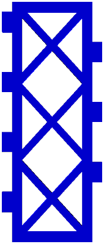

- Bottom Part:
- 
- Side Part:

3D printable parametric cubbies to store your 3D things. There are two distinct shapes — a bottom and a side — that are generated to the dimensions of your things, 3D printed, then assembled into modular storage units. The parts are optimized for printing by using sparse structures (to save material) that lay flat on the print bed (for ease of printing).


All models should be generated by specifying, at minimum, the parameters cubby_width, cubby_depth, and cubby_height in cubbies.scad (ways to do this are described below.) The dovetail joints are generated to a constant size (controlled through the parameters tab_width, tab_padding, and tab_tolerance) and should not be expected to fit after being scaled. Cubbies can be generated in in one of the following ways:
Using the Thingiverse Customizer
Using OpenScad – either by using its builtin customizer (choose Window -> Customizer from the menu bar if it is not visible), or by modifying the variables at the top of the cubbies.scad file. As mentioned above, the minimum paramaters to generate a custom sized cubby are cubby_width, cubby_depth, and cubby_height. (Even those arguments can be omitted, and your cubby will be whatever abritrary size I decided as defaults (40,120,90).)
There are two scripts for generating cubbies from the commandline: cubbies.sh (run ./cubbies.sh -h for details can generate entire sets of cubbies, and shopenscad.sh (run ./shopenscad.sh -h for details1) generates individual parts.
For a single cubby, you will need to print the side piece twice, and the bottom piece once. To add additional cubbies, print one bottom and one side. The bottom and side pieces can be flipped upside down so that the bottom piece’s tabs fit into the extra unused holes of the side piece. You can also use this to control whether the screw tabs end up on the inside or outside of the cubby.
You can print tolerance test fit pieces (which are the minimum material necessary to confirm that the pieces will fit with your printer and slicer settings). These test pieces were generated using dovetail_test_fits.sh, which you can use to generate your own at different tolerances (run dovetail_test_fits.sh -h for details). You can also generate them in OpenSCAD by specifying either male_tabs or female_tabs for the part paramaters (the cubby_depth paramater is respected as the length of those dovetail test pieces).
part Controls which part will be generated, and can be any of:bottom — a bottom part whose dimensions will be cubby_width x cubby_depth.
side — a side part whose dimensions will be cubby_depth x cubby_height.
female_tabs — generates a shape consisting of the minimum amount of material needed to test the dovetail joint fit. cubby_depth is respected as the length that the tab holes (mortises) should run. (I have found that although my printer could print a single tab accurately, spanning the entire length of cubby_depth gave me the most accurate test.
male_tabs — as female_tabs above, except with male tabs (tenons)
view_fit — used as a debugging aid during development – displays two sets of tops and bottoms posiitioned to inspect tab fit.
both — a bottom and a side laid next each other. (These may look like two seperate models, but is only one model, and obnixious to work with in a slicer. Generating them seperately will allow you to manipulate them individually).
cubby_widthbottom and male_tabs part.
cubby_depthside and female_tabs part.
cubby_heightside.
thicknessbottom, side, or test fit pieces (male_tabs, female_tabs) should be. When either part is eventually laid flat on the print bed, this effectively becomes the z axis height. (The tab_depth is dictated by this thickness dimension.)
strut_thicknessbottom and side.
max_bridgebottom, and side.
tab_widthtab_paddingtab_tolerance
The source repository is a Git repository that is hosted both on a read-only HTTPS URL and on a read-write SSH url.
You can push to the read-write URL simply without creating any user account. You only need to generate a SSH public key on your own system.
The read-only clone command is:
git clone --recurse-submodules https://git.cryptonomic.net/cubbies.gitTo clone from the read-write URL, you first need to have your own ssh identity. Then you can run git clone.
# Generate an SSH key if needed
command -v ssh-keygen || { echo Please Install OpenSSH; exit; }
[ -d ~/.ssh ] || mkdir ~/.ssh
[ -e ~/.ssh/id_ed25519.pub ] || ssh-keygen -t ed25519 -f ~/.ssh/id_ed25519 -N
# Add the public key for cryptonomic.net
echo cryptonomic.net ssh-ed25519 AAAAC3NzaC1lZDI1NTE5AAAAIPK7K8KsygvXtjw0yH4h43bwBGKq9oWBdCa1eY5rzT5D >> ~/.ssh/known_hosts
# Perform the clone
git clone --recurse-submodules ssh://d@cryptonomic.net:public_git/cubbies.gitYou can push your changes back simply:
git add .
git commit -a -m 'commit message'
git push
$ ./cubbies.sh -h
./cubbies.sh: generate sets of cubbies. You will need print the side piece twice for your
first bottom piece, then a single side piece for each additional bottom piece.
Usage:
./cubbies.sh cubby-depth cubby-height cubby-width1 [cubby-width2 ... cubby-widthN]
Examples:
./cubbies.sh 150 90 20
Generates two total pieces: a side piece (150mm depth, 90mm height) and a
bottom piece (150mm depth and 20mm width). You will need to print the side
piece twice and bottom piece once.
./cubbies.sh 180 120 20 30 35
Generates four total pieces, which can be assembled to form a row of
cubbies: one side piece (180mm depth, 120mm height) and three bottom pieces,
with widths of 20mm, 30mm, and 35mm (and each sharing the same depth of
180mm). The side piece will need to be printed 4 times, and each bottom
piece printed once.
thickness=3 strut_thickness=4 ./cubbies.sh 200 140 20
You can override any of the other variables from your scad file by passing
them into ./cubbies.sh in this manner.$ ./shopenscad.sh -h
./shopenscad.sh: parse and execute OpenSCAD files, allowing default variables from input scad
to be overridden with values supplied from the shell. (The parsing of scad
files is done from the shell mostly with sed, and is very primitive)
Usage: ./shopenscad.sh [-h] [-n] [-p] [-i] [-o OUTPUT-FILENAME] INPUT.scad
-h, --help display this help
-p, --print-vars print variables parsed from INPUT.scad
-i, --interactive show output command and query for execution
-n, --no-act show output command, do not execute
-s, --shell-skel output a skeleton shell script for generating models
-o, --output-filename Specify an output filename. The following variables are
available to you:
$VALUES - all values from INPUT.scad. This is the
default (-o '${VALUES}.stl'):
cube-15-10-5.stl
$ALL - all variable names and values from INPUT.scad
(-o '${ALL}.stl'):
shape=cube,width=15,height=10,depth=5.stl
Additionally, all variables parsed from INPUT.scad
are available in the associatve array , e.g.:
-o '${SCAD[part]}.stl'
Usage examples:
1) Run openscad with default values from input scad file:
$ ./shopenscad.sh input.scad
2) You can override variables in the input file with variables passed in
through the shell; this will override "part" and "cubby_width"
paramaters from input scad file. (Note that if the part is a string,
you need to include quotes.):
$ cubby_width=200 part='"bottom"' ./shopenscad.sh input.scad
3) Generate multiple models:
$ for w in 250 300 350 400; do
cubby_width="" part="bottom" ./shopenscad.sh cubbies.scad
done$ ./test_fits.sh -h
Usage:
./test_fits.sh
./test_fits.sh [depth] [tolerance1 tolerance2 .. toleranceN]
By default five test fit pieces are generated with a length of 120mm at the
tolerances 0.1mm, 0.2mm, 0.3mm, 0.4mm, and 0.5mm.
Over ride the defaults by supplying paramaters; the first parameter the depth and the rest are
taken as tolerances.Copyright (C) Steven Vasilogianis
This program is free software: you can redistribute it and/or modify it under the terms of the GNU General Public License as published by the Free Software Foundation, either version 3 of the License, or (at your option) any later version.
OpenSCAD already allows you to generate models with varying paramaters through, e.g., OpenSCAD -D "param1=100" -D "param2=10" scadfile.scad -o output.stl. Now you’re going to want to change the output.stl filename to avoid overwriting a previously generated model; generally, the information going into your variables is useful to have in the output filename.↩︎
{kind=link}
{kind=link}
{kind=link}
{kind=link}
{kind=link}
{kind=link}
{kind=link}